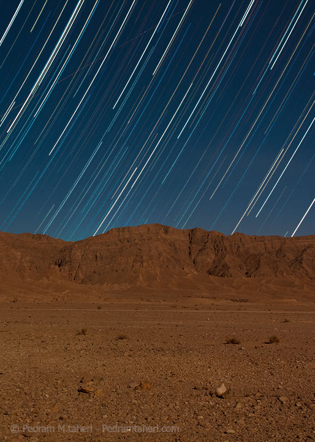
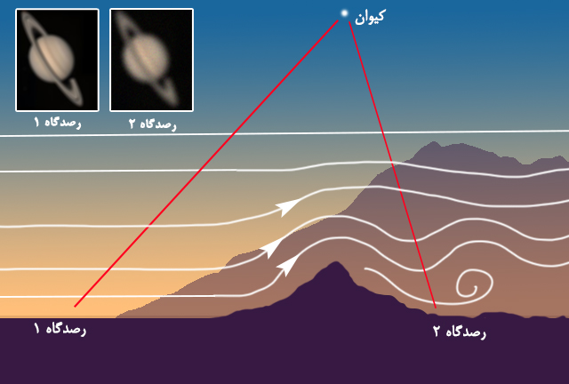

چرا صاف و بیابر بودن آسمان بهتنهایی کافی نیست؟ مروری بر دو شاخصی که کیفیت واقعی یک شب رصد را رقم میزنند.
نوشته: پدرام محمدطاهری
همه میدانیم که رصد آسمان شب و عکاسی نجومی ارتباطی تنگاتنگ با وضعیت آب و هوایی دارد و پیشبینی هوای محل رصد همواره از جمله دغدغههای رصدگران و عکاسان آسمان شب است. اما واقعیت این است که صرف صاف و بدون ابر بودن آسمان و دوری از آلودگی نوری و غبارهای شهری نمیتواند تعیینکننده همه چیز باشد. بلکه عوامل جوی دیگری نیز در کیفیت محل رصد شما نقش بازی میکنند که برای یک فعالیت حرفهایتر و جدیتر بسیار مهم هستند. در این مقاله به دو مورد از این عوامل تعیین کننده میپردازیم. دو عامل «شاخص دیدِ نجومی» و «شاخص شفافیت جوی» که نقشی اساسی برای یافتن آسمانی ایدهآل بازی میکنند.
شبی صاف و عاری از غبار را در فصل زمستان تصور کنید که ماه در آسمان حضور ندارد و پس از چند شب بارش بیوققهی برف و باران ، آسمان به یکباره چنان شفاف و تمیز و عاری از ابر به نظر میرسد که کمفروغترین ستارگان را هم میتوانید با چشمان معمولی نظاره کنید؛ ستارگان آسمان زمستان در حال چشمک زدن هستند و شباهنگ پرفروغتر از همیشه بهنظر میرسد. خشنود از آسمانی چنین زیبا میروید تا خود را برای یک رصد تمام و کمالِ اعماق آسمان آماده کنید و در این بین نظر دوست عکاستان را هم در مورد آسمان جویا میشوید. اما دوست عکاستان که در حال آماده کردن تلسکوپ خود برای ثبت تصویری از سیاره کیوان است بر خلاف شما از کیفیت آسمان رضایت چندانی ندارد!
مشکل کجاست؟ چرا شبی که برای رصد آسمان ظاهرا ایدهآل به نظر میرسد برای عکاسی از جرمی نسبتا پرفروغ مثل سیاره کیوان مناسب نیست؟

عکس: پدرام محمدطاهری
زمین دارای جوی چندلایه است و حتا اگر ابری هم در کار نباشد نورِ ستارگان و سایر اجرام کیهانی قبل از اینکه توسط ما رصدگران و عکاسانِ زمینی ثبت شود باید از خلال این لایههای ظاهرا نامرئی عبور کند. لایههای جو زمین هر یک دماهای گوناگونی دارند که باعث میشوند سرعت نور در حین عبور از هر یک از این لایهها تغییر کند و در نتیجه بر کیفیت تصویری که به ما میرسد تاثیر مستقیم بگذارند و در نهایت نور نتواند مسیری کاملا مستقیم و بیعیب و نقص را تا سطح زمین طی کند.
در بسیاری از مواقع حتا این لایهها تحت تاثیر آشفتگیهای متعدد جوی دچار تلاطم میشوند و در نتیجه نور ستارگان کاملا با نوعی بینظمی و به هم ریختگی به ما میرسد. به همین دلیل برخی شبها ستارگان و یا حتا سیارات بیشتر از پیش چشمک یا سوسو میزنند و یا بسیاری اجرام از پشت تلسکوپ به شدت لرزان و مغشوش به نظر میآیند.
«دیدِ نجومی» شاخصی است برای بیان تاثیر این تلاطم جوی بر روی نور اجرام سماوی. که با کمک آن میزان لرزش و آشفتگی نور حاصل از تلاطمات لایههای جو برآورد یا پیشبینی میشود. میزان شاخص دید در کیفیت عکاسی نجومی تاثیر بسزایی دارد. برای درک بهتر آن بیایید با عکاسی عادی در نور روز کارمان را شروع کنیم.
تصور کنید در روزی تابستانی بر روی جادهای آسفالته که از میان کویری داغ عبور میکند ایستادهاید و میخواهید از یک دسته شتر که چندصد متر آنسوتر، عرض جاده را طی میکنند عکاسی کنید. چیزی که به سرعت در خواهید یافت آشفتگی مختصر و سرابگونهی تصویر شترها و سطح جاده است و عبورهوایی داغ بین شما و سوژه عکاسیاتان. پدیدهای که نباید با پدیده سراب که تصویری وارونه از اشیاء در شرایط مشابه درست میکند اشتباه گرفته شود.
این پدیده که به دلیل آشفتگی هوای بین شما و سوژه عکاسی اتفاق میافتد میتواند در مقیاسی عظیمتر نیز روی دهد. مشابه همین اتفاق را در شب به صورت لرزش نور ستارگان تجربه میکنیم. با این تفاوت که فاصله شما اینبار با سوژه به شکلی حیرتانگیز بیشتر است و البته لایههایی بیشتر و متنوعتری از هوا بین شمای عکاس و سوژه آسمانی قرار گرفته ( یعنی تقریبا تمام قطر جو زمین با همه لایههایش).
حالا شبی کاملا صاف اما با تلاطم جوی زیاد را تصور کنید که در نهایت همه چیز از پشت تلسکوپ و یا دوربین عکاسی لرزان و آشفته به نظر میرسد. در چنین شرایطی ثبت تصویر پر نوسانِ و پرحرکت اجرام آسمانی که مدت زمان نوردهی بالایی را نیز میطلبند در آخر به تصاویری محو و کم جزئیات خواهد انجامید خصوصا اگر ارتفاع سوژه از افق چندان زیاد نباشد.
این تلاطم به شکلی علمی صورتبندی شده است و میتوان آن را برای یک مکان و زمان مشخص اندازهگیری و یا حتا گاهی پیشبینی کرد. شاخص دید نجومی یا به طور خلاصه «دید» معمولا براساس ثانیهی قوس سنجیده میشود، واحدی در زاویه که معادل یک شصتم درجه است. که البته میدانید ما از واحد درجه برای بیان فاصله ظاهری اجرام بر روی کرهی سماوی استفاده میکنیم. بطور نمونه اگر میزان شاخص دید معادل ۶ ثانیهی قوس (هر یک درجه در آسمان معادل ۳۶۰۰ ثانیهی قوس است) بود، به این معنی است که می توان انتظار داشت که ستارگان در نوردهی بلند مدت عکاسی، بهجای ایجاد تصویری نقطهای و دقیق ، دایرهای به قطر ۶ ثانیهی قوس را در تصویر ایجاد کنند که میتواند برای یک عکس نجومی فاجعه باشد. دیدِ ۱ ثانیهی قوسی که برای سایتهای رصد و عکاسی نجومی عموما مقداری ایدهآل است به مراتب از دید 6 ثانیهی قوسی بهتر خواهد بود و بازدهی پرجزئیاتتری خواهد داد ؛ ستارگان کم تر در عکسِ نهایی محو میشوند و به همین میزان جزئیات بیشتری از اجرام آسمان را میتوانیم ثبت کنیم.
دیدِ نجومی معمولا از عوامل متعددی تاثیر میپذیرد از عوامل محیطی گرفته تا عوامل فصلی و آب و هوایی. به طور مثال معمولا بعد از عبور یک جبههی آب و هوایی مانند طوفانها و بارشهای شدید شاخص دید به مدت یک روز یا بیشتر به شدت بد میشود اما بعد از چند روز دید بهبود مییابد.
همچنین فصلها نیز بر میزان شاخص دید تاثیر میگذارند. در فصلهای گرم سال بهویژه تابستان شاخص دید بسیار بهتر است چون جریان جتاستریم بسیار ضعیفتر و دورتر است اما در فصول سرد بخصوص زمستان بهدلیل شدید شدن جریان تندگذر جتاستریم در لایههای بالایی جو ما عموما شاخص دید چندان خوبی نخواهیم داشت اما در عوض شفافیت هوا معمولا در این فصل بهتر خواهد بود.
میزان شاخص دید همچنین ارتباط مستقیمی با ویژگیهای مورفولوژی محل رصد هم دارد. مشخصا در نقاطی که از لحاظ جغرافیایی خیلی هموار و مسطح هستند دید بهتر است. تودههای هوا برفراز سرزمینهایی که پستی و بلندهای کمی دارند خیلی یکنواختتر حرکت میکنند.
اما مناطق کوهستانی با ارتفاع متوسط که دارای پستی بلندیهای زیادی هستند و حتا نواحی پیرامونی آنها مثل کوهپایهها معمولا شاخص دید نامناسبی دارند. مگر اینکه در آنجا به ارتفاعات بسیار بالایی صعود کنید تا بسیاری از این لایههای آشفته را زیر پا بگذارید. درست مانند مکان رصدخانههایی که بر فراز قلههای مرتفع ساخته میشوند تا از تلاطم در امان باشند. اما در ارتفاعات متوسط ، بادهایی که از فراز کوهستان گذر میکنند مانند نهرهای آب جاری که بر روی تخته سنگهای عظیم همگی به هم میپیوندند و در هم غلیان میکنند ، آشفتگی زیادی در اطراف خود پدید میآورند.

تلاطم جوی بر فراز کوهستان. باد در عبور از تاج کوه بهصورت گردابی درمیآید؛ به همین دلیل دو رصدگاه که فاصله چندانی هم ندارند میتوانند دید متفاوتی از سیاره کیوان ثبت کنند.
شاخص دید از عوامل محیطی دیگری هم تاثیر میگیرد مثلا در مناطق بزرگ شهری با سازههای گوناگون و تنوع پستیبلندیهای مصنوعی گرمای روز به سختی و بهطور غیریکنواخت در حین شب تخلیه میشود و همین باعث اعوجاج نور و افت کیفیت دید میشود. از این روی مناطق نزدیک چمن زارها و دریاچه های بزرگ در نقاط شهری «نسبتا» شاخص دید بهتری دارند.
شاخص دید نجومی حتا در طول یک شبهم دستخوش تغییر میشود مثلا در یک شب تابستانی که انتظار یک شاخص دید خوب را داریم در ابتدای شب بهدلیل اینکه هوای گرمِ بهجا مانده از روز جهت رو به بالا دارد جو اطراف محل رصد دچار آشفتگی موقتی میشود و کیفیت دید در آغاز شبهای گرم تابستانی چندان خوب نیست. اما با گذر از ساعات اولیه شب رفتهرفته کیفیت دید به طرز چشمگیری بهتر میشود.
اگر شاخص دید نامناسب بود بهتر است به سراغ سوژههایی در حوالی سرسو (خالِ آسمان) بروید و از لنزهایی با فاصلهی کانونی کم (لنز واید یا لنز نرمال) بهره ببرید و موضوعاتی با وسعت ظاهری بیشتر مثل صورتهای فلکی را برای عکاسی انتخاب کنید. عکاسی با لنزهای تله یا عکاسی با تلسکوپ از سوژهایی مثل سیارات و ماه در چنین شرایطی فقط با کمک پساپردازش (Post Processing) آنهم تاحدودی نتیجه قابل قبولی ارائه خواهد داد.
شفافیت تعریفی بسیار سادهتر دارد و به میزان شفاف یا کدر بودن جو بستگی پیدا می کند. جو زمین علاوه بر غبار و ابر و مه به شکلهای نامحسوس دیگری رطوبت را در خود پنهان میکند. واقعیت این است که لایهای بسیار نازک از رطوبت و بخار در جو درست مانند دود و سایر آلایندهها میزان شفافیت آسمان را کاهش میدهد و درست مانند آلودگی نوری بسیاری جزئیات ظریف و کمسوی تصاویر را محو میکند. حتا اگر در نزدیکی محل رصد شما شهر یا روستایی کوچک باشد، شفافیتِ کم و کدر بودن جو میتواند تاثیرات آلودگی نوری محلی را دوچندان کند.
اگر در محلی رصد میکنید که در چند کیلومتری آن شهری نسبتا بزرگ واقع شده طی شبهای مختلف سال با تغییر میزان شاخص شفافیت متوجه تغییر میزان گسترش چتر آلودگی نوری بر فراز شهر هم خواهید شد. به عبارت دیگر گاهی میزان آلودگی نوری که در یک رصدگاه ثابت و همیشگی با چشم تشخیص میدهید به عنوان یک شفافیتسنج عمل میکند.
تلسکوپ ۳.۶ متری در لاسیا، یک مرکز نجومی در کشور شیلی درحال رصد. این مرکز در ارتفاع ۲۴۰۰ متری از سطح دریا در کویر آتاکاما بنا شده است تا به قدر کافی از تلاطمهای جویی و آلودگی نوری در امان باشد.
Credit: ESO/S. Brunier — ESO Photo Ambassadors
برای یافتن آسمانی با شفافیت مناسب بهترین راه افزایش ارتفاع است هر چه به مناطق مرتفعتری برویم (فارغ از تغییرات مقطعی هوا) از رطوبت و بخار جو کاسته میشود. و این اصلی ترین دلیلی است که چرا رصدخانههای بزرگ را برفراز کوهها بنا میکنند. بهعلاوه در روزهای بعد از بارشهای شدید که آسمان بیشترِ رطوبت و غبار خود را تخلیه کرده است، میتوانیم انتظار شفافیت بسیار خوبی را داشته باشیم. با این وصف شاید بتوانید به سوالی که در آغاز مقاله به آن اشاره شد جواب بدهیم.
در مواردی که شفافیت مناسب نیست عکاسی و رصد سوژههای پرفروغ تر یا اجرامی که ارتفاع مناسبی از افق دارند گزینه بهتری خواهد بود. اما درصورت مناسب بودن شفافیت شاید بهترین فرصت است که به سراغ عکاسی از اجرام اعماق آسمان بروید چراکه معمولا عکاسی از آنها شفافیت بالایی را میطلبد.
پیش بینی شاخص دید و شفافیت
این روزها به کمک نرمافزارها و سایتهای پیشبینی هوا میتوانیم پیش از روز رصد و یا عکاسی، میزان شاخصهای مورد اشاره را تا حدودی تخمین بزنیم. یکی از مناسبترین آنها را در بخش ابزارهای سایت کاوش میتوانید مشاهده کنید که عموما ما نیز در رصدهای خود از آن بهره میبریم.
شاخص دید و شفافیت آسمان را برای موقعیت خودتان، همین حالا بررسی کنید.
اگر عزم عکاسی و رصد آسمان را دارید هرگز خود را به این دو شاخص محدود نکنید. آسمان ، آسمان است حتا اگر شفاف نبود و شاخص دید نامناسب بود به کارتان ادامه دهید شاید یکی از بهترین عکسهایتان را در همین شرایط گرفتید.